「言心」MindDialogue 精简版 · 界面可视稿
需求编号 7008111111 · 以下 13 幅画面全部实拍自可运行原型 prototype-lite/（非设计稿）：前 5 幅为音视频单路主链路，后 8 幅为多信号源（四路素材）链路；
给客户确认用，同时是开发交付的界面基线。
任务台 · 素材导入与会话列表
分析师席位登录后第一屏；「新建会话 → 已有素材导入」选择本机录音/录像，仅读元数据登记，授权文书号为服务端硬卡口。
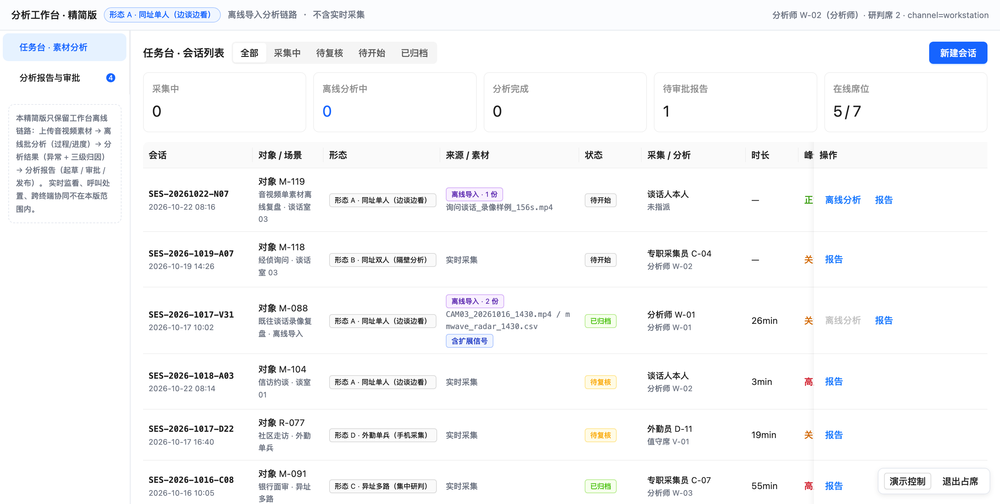
- 统计卡收敛为离线口径：采集中 / 离线分析中 / 分析完成 / 待审批报告 / 在线席位。
- 来源列区分「离线导入 · N 份」（逐份列出文件名）与历史「实时采集」；导入行才有「离线分析」动作，归档行该按钮置灰。
- 28.0128.05 语音 / 语音+视频文件即"单一或多种信号输入"的离线实例。
分析过程 · 批分析逐段进度（单素材最小闭环）
点「离线分析」后行内出现进度标签（截图实拍于 39% · 已完成解封装 / 语音通道 / 语音特征三步，当前步为语义通道）；一段素材 7 步：解封装 → 语音通道 → 语音特征 → 语义 → 视觉 → 生理 → 融合判定与报告起草，进度经 WS 实时广播。
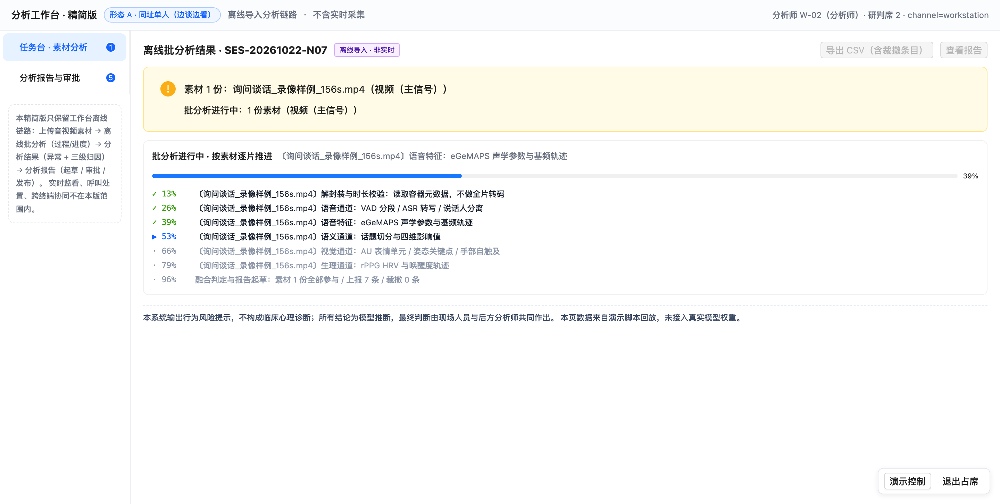
- SES-20261022-N07 为实拍时新建的导入会话（询问谈话_录像样例_156s.mp4，4.4 MB / 时基 156s 由本机读出）。
- 归档只读会话不可发起（服务端 409）；产物只落在本会话，口径强制「离线导入 · 非实时」。
- 28.06 单模态/多模态由素材类型自动决定，不产出假 0 值。
分析结果 · 六类异常与语义影响值
批分析完成后的结果页：概览卡（上报异常 7 / 覆盖模态 6/6 / 裁撤 0）、六类信号可用性行、异常事件表、话题切分与四维影响值。
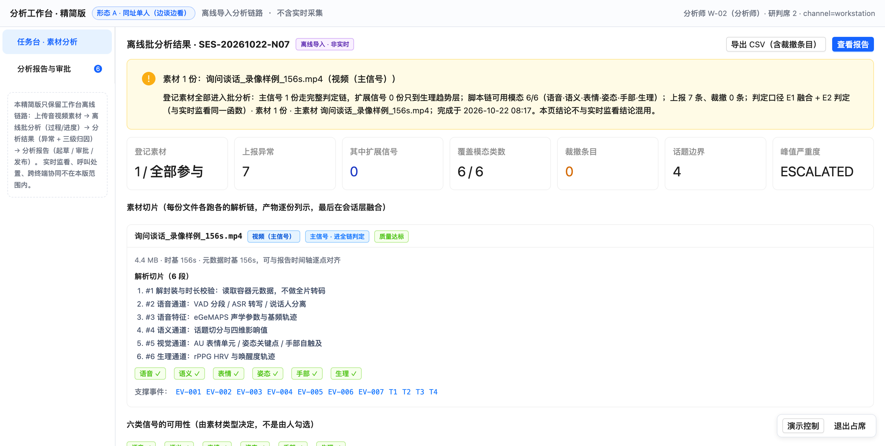
- 异常表逐类命中：语音(EV-001) 语义(EV-002) 表情(EV-003) 生理rPPG(EV-004) 姿态(EV-005) 手部(EV-006) + 跨模态聚合升级(EV-007)。
- 28.0428.07 六类异常全覆盖；28.02 分角色置信度、话题边界依据、影响值四维分解均可点开核。
分析结果 · 三级归因证据链（核心差异点）
点异常行展开归因抽屉：L1 观察层（物理量+单位+时间窗）→ L2 候选规则（权重+文献+命中态）→ L3 结论（置信度 + 反事实 + 免责声明）；另有跨模态因果链视图。
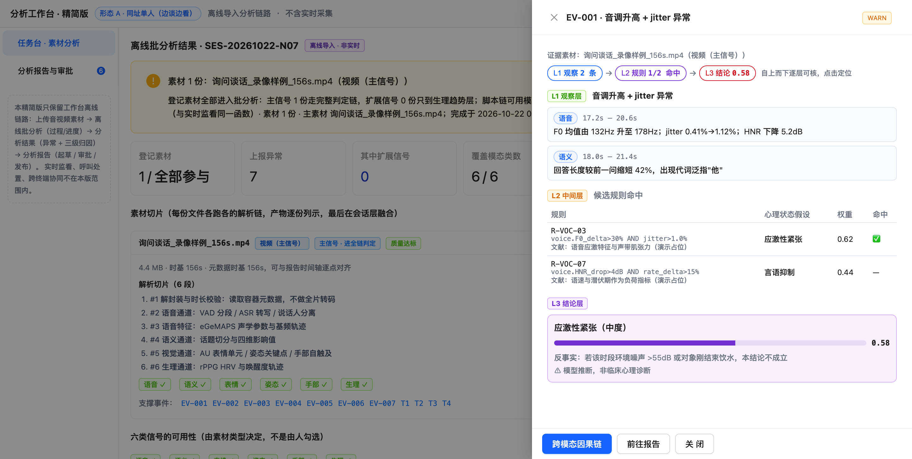
- 截图实拍：EV-001「音调升高+jitter」→ R-VOC-03 命中（0.62）→ 结论「应激性紧张（中度）0.58」，反事实与"非临床心理诊断"常驻。
- 抽屉顶部标「证据素材：询问谈话_录像样例_156s.mp4（视频（主信号））」——多路素材下每条告警都要能回指是哪几份文件撑起来的，主信号事件另按
source_assets列全（见 11 表「素材」列）。 - 28.0128.03 "分析行为异常背后的心理原因"保持推断性质——同类产品（TrueSight/云心测/一心心智）均未产品化此证据链。
分析报告 · 起草 / 审批 / 发布
批分析完成后自动起草报告；分析师不能自批，复核人审批/驳回（理由必填）后发布导出；导出动作写入哈希链审计。
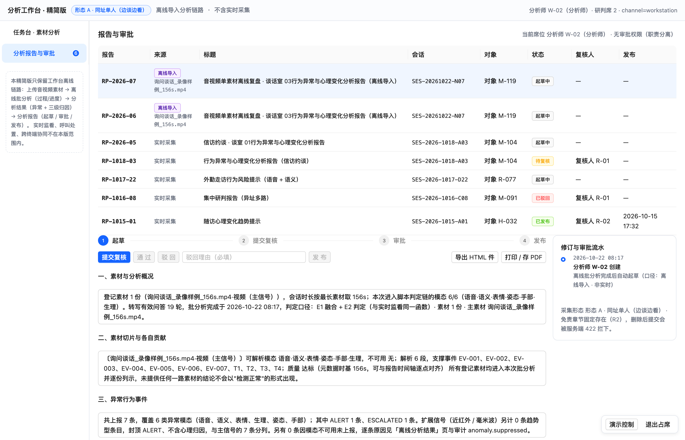
- 报告口径自动标注「离线导入 · 非实时」，含异常清单与归因摘要。
- 28.08 实测动线终点：现场上传招标方素材 → 分钟级出报告，全程留痕可追溯。
多信号源：四类素材登记 → 逐份切片 → 汇成一份报告
以下 8 幅实拍自同一次四路素材批分析（会话 SES-20261022-N08：录像 + 录音 + 近红外采样序列 + 毫米波采样序列，报告 RP-2026-07）。
口径详见 06_多信号源上传与硬件接入说明.md。
任务台 · 多源素材登记与批分析入口
导入行显示「离线导入 · 4 份」并逐份列出文件名，含扩展信号时追加标签；行内动作按状态三态切换：离线分析 → 进度标签 → 查看结果。
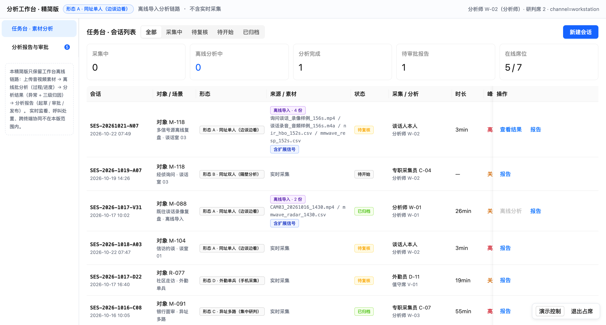
- 统计卡新增「离线分析中」，与「分析完成」分列——批处理是异步的，不能只看已完成数。
- 归档只读会话（SES-2026-1017-V31）的「离线分析」置灰，服务端同样 409。
- 28.01 多种信号输入在这一版落到"多路文件可登记"，硬件在线接入属后续项。
新建会话 · 四路素材分框登记（音视频为主，扩展信号可选）
主信号两框（视频 / 音频）+ 扩展信号两框（近红外 / 毫米波，标注"可选"）；本机读元数据后进入已登记列表，可逐份移除并显示主/扩展计数。
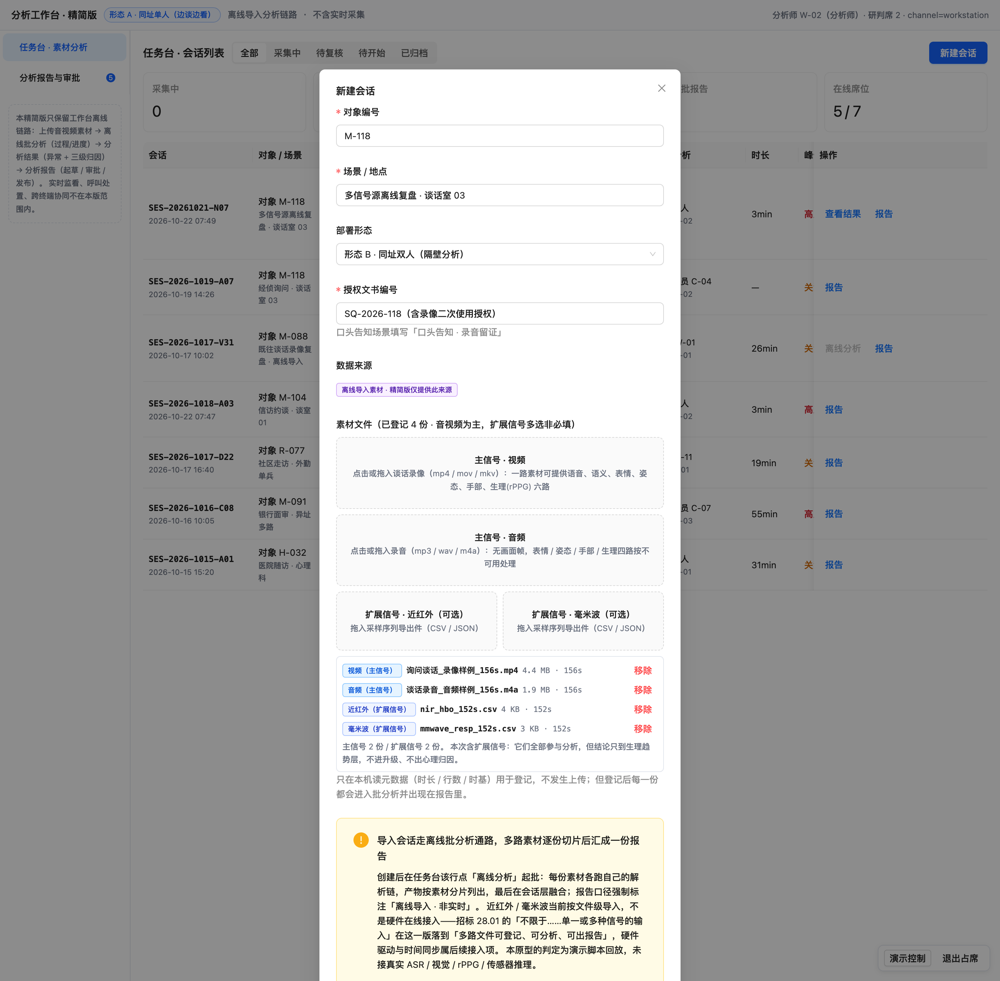
- 截图实拍：四份素材时长 156s / 156s / 152s / 152s 全部由本机读出（音视频取容器元数据，采样序列取首列时基）。
- 登记即参与：提示语写死"但登记后每一份都会进入批分析并出现在报告里"，没有"跳过某份素材"的开关。
- 授权文书号为服务端硬卡口（R1）；扩展信号声明为文件级导入而非硬件在线接入。
分析过程 · 逐素材分片推进（20 段）
进度按素材分组：每份素材各跑自己的解析链，✓ 已完成 / ▶ 进行中 / · 待执行，末段为会话层融合；进度经 WS 实时广播。
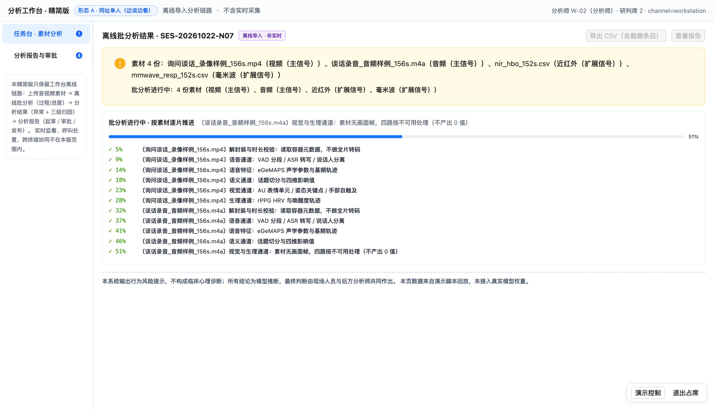
- 视频 6 段（解封装→语音→语音特征→语义→视觉→生理）、音频 5 段（无画面帧故无视觉段）、扩展信号各 4 段（读序列→通道配对→伪迹剔除→基线校正）。
- 每段步骤名带文件名，看得见"现在在算哪一份"，而不是一个总百分比。
- 28.06 单模态/多模态由素材决定：音频素材这一段就不存在视觉通道步骤。
分析结果 · 汇总（全部素材参与）
概览卡新增「登记素材 4 / 全部参与」「其中扩展信号 2」；顶部提示块逐份列出素材与角色，并写明脚本链可用模态、上报/裁撤计数与判定口径。
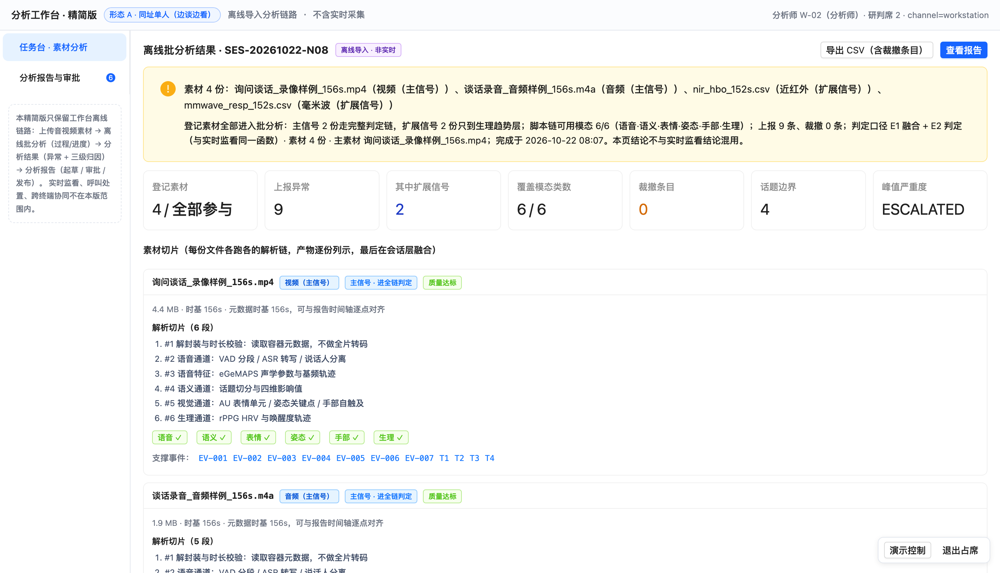
- 判定口径明示
E1 融合 + E2 判定（与实时监看同一函数）· 主素材 询问谈话_录像样例_156s.mp4——融合在会话层，不在素材层。 - 本页结论与实时监看结论分道：不进现场工单、不改监看灯色。
分析结果 · 素材切片卡与生理趋势
每份素材一张卡：角色标签（进全链判定 / 只到生理趋势层）、质量标签、解析切片清单、六路模态 ✓/✕、支撑事件跳转；扩展信号另附趋势表（基线→峰值→末段值 + 轨迹）与"本路为什么只到趋势层"逐条列示。
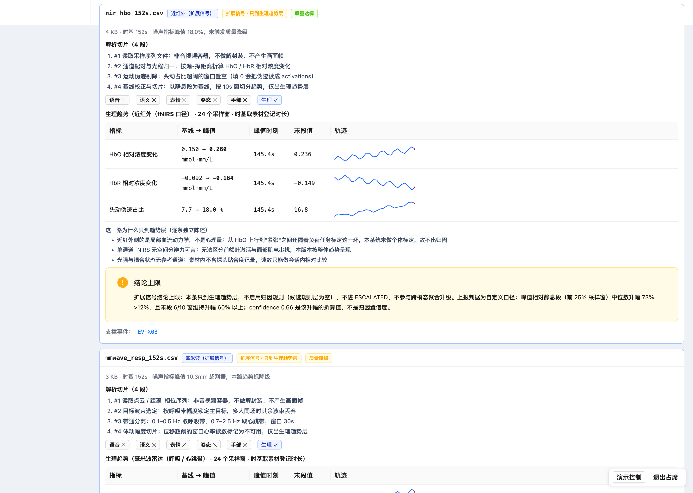
- 音频卡显示表情/姿态/手部/生理四路
✕，同时仍承载 5 条事件——"这一路没素材"与"这一路没检出"是两件事。 - 近红外卡：HbO 0.150→0.260 mmol·mm/L、头动占比 7.7→18.0%，时基明示取"素材登记时长"。
- 毫米波卡因体动幅度超判据被标"降级"，趋势仅供复核——降级原因与结论上限同屏出现。
分析结果 · 六类异常表（含素材列与封顶标记）
异常表新增「素材」列，逐条标出承载素材；扩展信号条目在心理原因结论列显示 只到趋势层 · 不出归因，与主信号的三级归因条目分列。
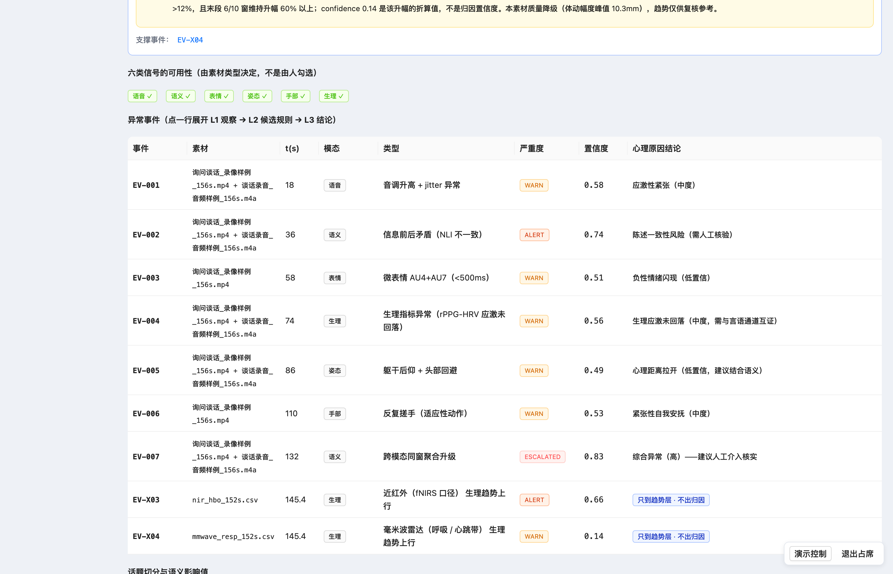
- 实拍：主信号 7 条（含跨模态同窗升级 EV-007 · 0.83）+ 扩展信号 2 条（EV-X03 ALERT 0.66 / EV-X04 WARN 0.14，候选规则层为空）。
- 此处的
confidence在扩展信号行是趋势显著性折算值，不是归因置信度——同一列两种含义已在结果页与报告同时声明。 - 28.07 六类异常全覆盖仍由音视频两路主素材达成，扩展信号不参与凑类。
分析报告 · 自动起草（含精度受限块）
批分析完成后自动起草；「精度受限」块由素材构成自动生成：列出扩展信号份数、封顶口径、与 rPPG 不可互为校验的原因、降级素材与判据。
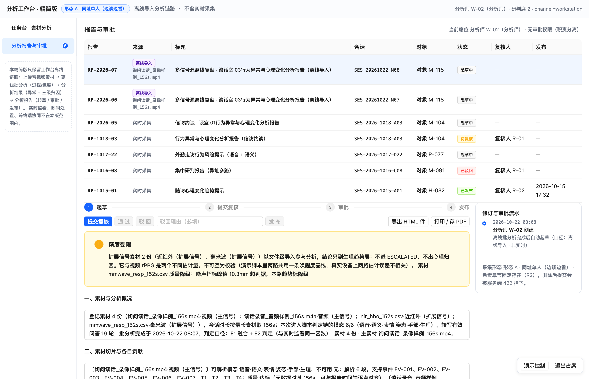
- 章节二「素材切片与各自贡献」逐份列示：可解析模态、解析段数、支撑事件、质量、趋势数值、结论上限。
- 职责分离不变：分析师提交复核，复核人审批，驳回理由必填，缺「局限与免责」章节服务端 422 拦下。
报告导出 · 附表 A 素材切片一览（下载 / 打印件）
导出与打印共用同一份 HTML：正文六章 + 附表 A · 素材切片一览（素材文件 / 信号源 / 角色 / 可解析模态 / 不可用模态 / 支撑事件数 / 质量 / 结论上限）+ 附表 B 修订与审批流水；未发布件带「草稿 · 未经复核审批」水印。
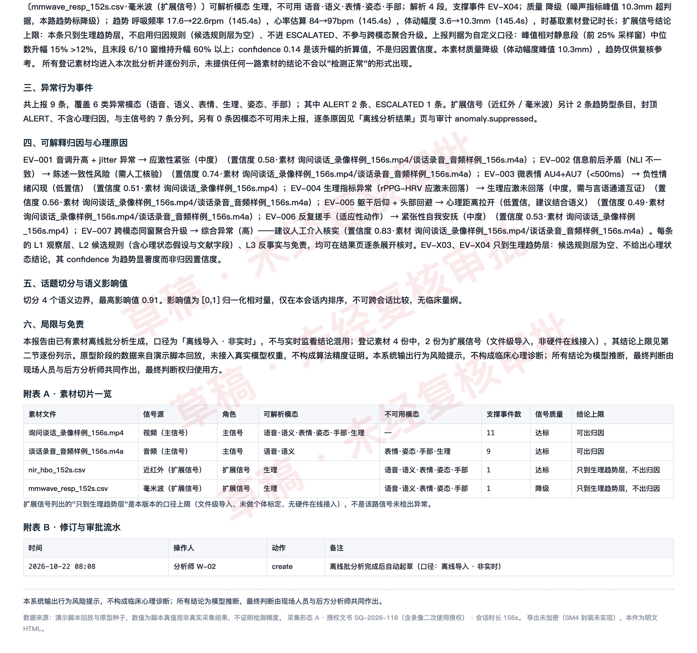
- 脚注保留数据来源与"导出未加密（SM4 封装未实现）"披露，打印后同样在纸上。
- 同批可导出 CSV（含
asset列与trend_only（不出归因）标记、被裁撤条目），导出动作写入哈希链审计。 - 28.08 实测动线终点：现场上传招标方多路素材 → 分钟级出可下载打印的报告。
拍摄方式：全部实拍自运行中的 prototype-lite（127.0.0.1:5185），工装为 精简版/tools/shot.mjs（无头 Chrome + 席位注入，精简版自带副本）。07 由 prototype-lite/scripts/inject-upload-shot.js 作 --pre 注入，把 public/demo/ 下四路真实素材经页面自身的 drop → 元数据读取 → 登记链路拖入；08 用 node scripts/demo-multisource.mjs --no-wait 只起批不等待、边跑边拍；09—11 与 13 的演示数据由 node scripts/demo-multisource.mjs 起批到完成后备好，结果页滚动的是内层 .stage-area。逐条命令见 README.md「可视稿重拍」，断言（npm run verify 49 条）与画面同批产出。